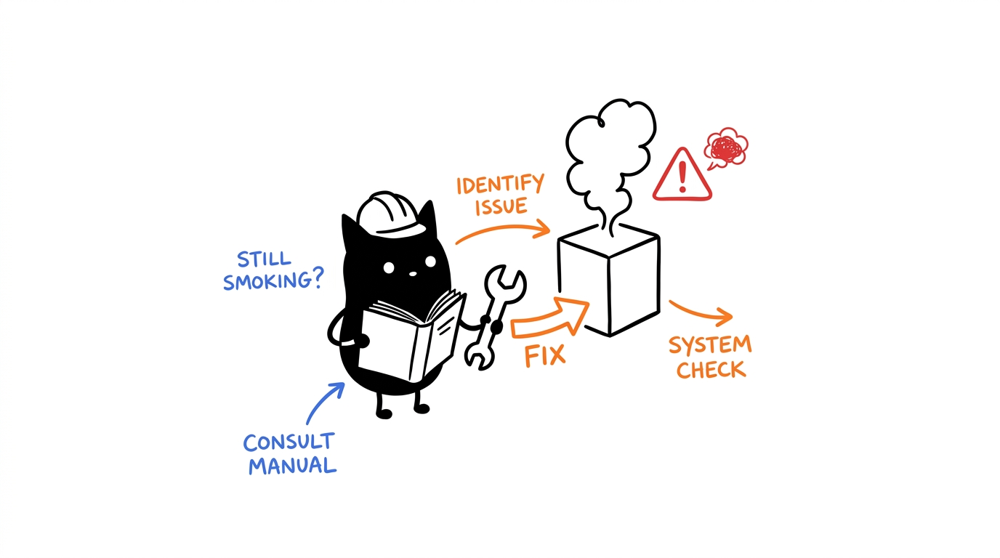

Diagnostics
First run setup.sh doctor — it classifies the failure for you. The scenarios below cover everything the doctor flags.

Doctor report anatomy
./setup.sh doctor
# 1. Runtime: Node 20+, Git, SQLite3 (WAL)
# 2. Component health: entrypoint present + stdio handshake + tool count
# 3. External drivers: Playwright / ADB / Blender (optional, per scope)
# 4. API keys: OpenRouter / GitHub / Google (optional, graceful fallback)Scenarios & fixes
Symptom: doctor marks a cell present: no. Cause: skipped build. Fix: cd <dir> && npm install && npm run build, then re-run doctor. Cytosol needs no build (src/server.js runs directly).
Symptom: entrypoint present but JSON-RPC fails. Causes: wrong Node major (node --version, need 20+), or a crashed native binding (node-pty in ribosome needs build tools: build-essential/python3). Reinstall that cell's node_modules and rebuild.
Symptom: enzyme Google calls fail; mitosis LLM tools report HTTP errors. By design: enzyme falls back to Wikipedia flagged degraded (quota); mitosis falls back to offline heuristics. Fix: check quotas/keys, or continue degraded — the system never hard-fails on key issues.
Symptom: test:matrix fails post-edit. Cause: almost always a missing trailing newline or invalid JSON in config/inventory.json (pre-commit end-of-file-fixer enforces this). Validate JSON, ensure newline, re-run.
Symptom: harness starts but lists zero tools. Checklist: absolute paths in the client file (no ~), node on PATH for the harness, enabled: true on the cell, then restart the harness (configs load at startup).
setup.sh doctor output and the failing gate.